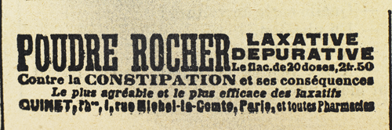

– Et vous vous rappelez cette inscription ?
– Peut-être… je ne sais pas… c’étaient des mots latins…
– Des mots latins ? Cherchez bien…
– Ai-je le droit ?… Si c’est un secret si grave, dois-je le révéler ?…
Clarisse hésitait.
– Vous le pouvez, Clarisse, je vous l’assure… Vous le pouvez parce que ce secret n’appartient à personne. Nul au monde n’a aucun titre à le connaître plus spécialement que votre père, ou ses amis, ou moi. Il est à celui qui le découvrira, au premier passant venu qui saura en tirer parti.
Elle céda. Ce que Raoul affirmait devait être juste.
– Oui… oui… sans doute avez-vous raison… Mais, n’est-ce pas ? j’y attachais si peu d’importance, à cette inscription, que je dois rassembler mes souvenirs… et en quelque sorte traduire ce que j’ai lu… Il était question d’une pierre… et d’une reine…
– Il faut vous rappeler, Clarisse, il le faut, supplia Raoul, que l’expression plus sombre de la Cagliostro inquiétait.
Lentement, la figure contractée par l’effort de mémoire qu’elle accomplissait, se reprenant et se contredisant, la jeune fille réussit à prononcer :
– Voilà… je me souviens… voilà exactement la phrase que j’ai déchiffrée… cinq mots latins… dans cet ordre…
Ad lapidem currebat olim regina…
C’est tout au plus si elle eut le loisir d’articuler la dernière syllabe. Joséphine Balsamo qui semblait plus agressive et s’était rapprochée de la jeune fille, lui criait :
– Mensonge ! Cette formule, nous la connaissons depuis longtemps Beaumagnan peut le certifier. N’est-ce pas, Beaumagnan, nous la connaissons ?… Elle ment, Raoul, elle ment. Ces cinq mots-là, le cardinal de Bonnechose y fait allusion dans son résumé, et il leur accorde si peu d’attention, et leur refuse si nettement le moindre sens que je ne t’en ai même pas parlé !… « Vers la pierre jadis courait la reine. » Mais où se trouve-t-elle, cette pierre et de quelle reine s’agit-il ? Voilà vingt ans qu’on cherche.
« Non, non, il y a autre chose.
De nouveau elle était reprise de cette colère terrible qui ne se manifestait ni par éclats de voix ni par mouvements désordonnés, mais par une agitation tout intérieure, que l’on devinait à certains signes, et surtout à la cruauté anormale et inusitée des paroles.
Penchée contre la jeune fille, et la tutoyant, elle scandait :
– Tu mens ! … tu mens ! … Il y a un mot qui résume ces cinq-là… Lequel ? Il y a une formule… une seule… laquelle ? Réponds.
Terrorisée, Clarisse se taisait. Raoul implora :
– Réfléchissez, Clarisse… Rappelez-vous… En dehors de ces cinq mots, vous n’avez pas vu ?…
– Je ne sais pas… je ne crois pas… gémit la jeune fille.
– Souvenez-vous… Il faut vous souvenir… Votre salut est à ce prix…
Mais le ton même que Raoul employait, et son affection frémissante pour Clarisse exaspéraient Joséphine Balsamo.
Elle empoigna le bras de la jeune fille et ordonna :
– Parle, sinon…
Clarisse balbutia, mais sans répondre. La Cagliostro donna un coup de sifflet strident.
Presque aussitôt Léonard surgit dans l’embrasure de la porte.
Elle commanda entre ses dents, d’une voix dont le timbre ne résonnait pas :
– Emmène là, Léonard… et commence à l’interroger.
Raoul bondit dans ses liens.
– Ah ! lâche ! misérable ! s’écria-t-il. Qu’est-ce qu’on va lui faire ? Mais tu es donc la dernière des femmes ? Léonard, si tu touches à cette enfant, je te jure Dieu qu’un jour ou l’autre…
– Ce que tu as peur pour elle ! ricana Joséphine Balsamo. Hein ! l’idée qu’elle puisse souffrir te bouleverse ! Parbleu ! vous êtes faits pour vous entendre, tous les deux. La fille d’un assassin, et un voleur !
– Hé oui, un voleur, grinça-t-elle, en revenant à Clarisse. Un voleur, ton amant, pas autre chose ! Il n’a jamais vécu que de vols. Tout enfant il volait ! Pour te donner des fleurs, pour te donner la petite bague de fiançailles que tu portes au doigt, il a volé. C’est un cambrioleur, un escroc. Tiens, son nom même, son joli nom d’Andrésy, une escroquerie tout simplement. Raoul d’Andrésy ? Allons donc ! Arsène Lupin, le voilà son nom véritable. Retiens-le, Clarisse, il sera célèbre.
« Ah ! c’est que je l’ai vu à l’œuvre, ton amant ! Un maître ! Un prodige d’adresse ! Quel joli couple vous feriez si je n’y mettais bon ordre, et quel enfant prédestiné sera le vôtre, fils d’Arsène Lupin et petit-fils du baron Godefroy. »
Cette idée de l’enfant donna de nouveau un coup de fouet à sa fureur. La folie du mal se déchaînait.
– Léonard…
– Ah ! sauvage, lui jeta Raoul éperdu. Quelle ignominie !… Hein tu te démasques, Joséphine Balsamo ? Plus la peine de jouer la comédie, n’est-ce pas ? C’est bien toi, le bourreau ?…
Mais elle était intraitable, butée dans son désir barbare de faire le mal et de martyriser la jeune fille. Elle-même poussa Clarisse que Léonard entraînait vers la porte.
– Lâche ! monstre ! hurlait Raoul. Un seul de ses cheveux, tu entends… un seul ! et c’est la mort pour vous deux. Ah ! les monstres ! Mais laissez-la donc !
Il s’était tendu si violemment contre ses liens que tout le mécanisme imaginé par Beaumagnan pour le retenir se démolit, et que la persienne vermoulue fut arrachée de ses gonds et tomba dans la pièce, derrière lui.
Il y eut un instant d’inquiétude dans le camp adverse. Mais les cordes, quoique relâchées, étaient solides et entravaient suffisamment le captif pour qu’il ne fût pas à craindre. Léonard sortit son revolver et l’appliqua sur la tempe de Clarisse.
– S’il fait un pas de plus, un seul mouvement, tire, commanda la Cagliostro.
Raoul ne bougea pas. Il ne doutait pas que Léonard n’exécutât l’ordre à la seconde même, et que le moindre geste ne fût la condamnation immédiate de Clarisse. Alors ?… Alors devait-il se résigner ? N’y avait-il aucun moyen de la sauver ?
Joséphine Balsamo ne le perdait pas de vue.
– Allons, dit-elle, tu comprends la situation, et te voilà plus sage.
– Non, répondit-il, très maître de lui… non, mais je réfléchis.
– À quoi ?
– Je lui ai promis qu’elle serait libre et qu’elle n’avait rien à redouter. Je veux tenir ma promesse.
– Un peu plus tard, peut-être, dit-elle.
– Non, Josine, tu vas la délivrer.
Elle se retourna vers son complice.
– Tu es prêt, Léonard ? Va, et que ce soit rapide.
– Arrête, exigea Raoul, d’un ton où il y avait une telle certitude d’être obéi qu’elle eut une hésitation.
– Arrête, répéta-t-il, et délivre-la… Tu entends, Josine, je veux que tu la délivres… Il ne s’agit pas de différer l’ignoble chose qui allait se faire ou d’y renoncer. Il s’agit de délivrer sur-le-champ Clarisse d’Étigues et de lui ouvrir cette porte toute grande.
Il fallait qu’il fût bien sûr de lui, et que sa volonté fût soutenue par des motifs bien extraordinaires pour qu’il la formulât avec tant d’impérieuse solennité.
Lui-même impressionné, Léonard demeurait indécis ; Clarisse, qui n’avait pas saisi cependant toute l’horreur de la scène, parut réconfortée.
La Cagliostro, interdite, murmura :
– Des mots, n’est-ce pas ? Quelque ruse nouvelle…
– Des faits, affirma-t-il… ou plutôt un fait qui domine tout et devant lequel tu t’inclineras.
– Qu’est-ce que cela signifie ? demanda la Cagliostro, de plus en plus troublée. Que désires-tu ?
– Je ne désire pas… j’exige.
– Quoi ?
– La liberté immédiate de Clarisse, la liberté de partir d’ici, sans que Léonard ni toi ne remuent d’un seul pas.
Elle se mit à rire et demanda :
– Rien que cela ?
– Rien que cela.
– Et en échange, tu m’offres ?…
– Le mot de l’énigme.
Elle tressaillit.
– Tu le connais donc ?
– Oui.
Le drame changeait soudain. De tout l’antagonisme furieux qui les jetait les uns contre les autres dans la haine et dans l’exécration de l’amour et de la jalousie il semblait que se dégageât le seul souci de la grande entreprise. L’obsession de la vengeance chez la Cagliostro passait au second plan. Les mille et mille pierres précieuses des moines avaient scintillé devant ses yeux, selon la volonté de Raoul.
Beaumagnan, à demi dressé, écoutait avidement.
Laissant Clarisse sous la garde de son complice, Josine s’avança et dit :
– Suffit-il de connaître le mot de l’énigme ?